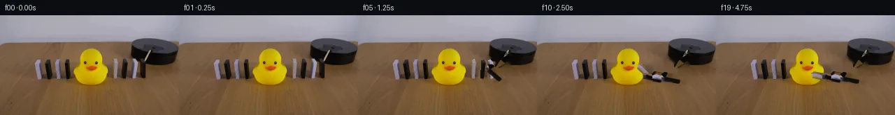

![首帧]()

Round 00
2026-11-04T23:23:51.244477+00:00像素候选变化代码 +221/−0inspection 更新
pixels c3269ad329fbafe5 · code ac58fa8b53f2c065
查看本轮 generate.py 真实 diff
--- previous/generate.py
+++ current/generate.py
@@ -0,0 +1,221 @@
+from pathlib import Path
+import math
+
+import cv2
+import numpy as np
+from PIL import Image, ImageDraw, ImageFilter
+
+from artifact_io import save
+
+
+ROOT = Path(__file__).resolve().parent
+W, H = 256, 144
+
+
+def polygon_mask(points, blur=0.0):
+ m = Image.new("L", (W, H), 0)
+ ImageDraw.Draw(m).polygon(points, fill=255)
+ if blur:
+ m = m.filter(ImageFilter.GaussianBlur(blur))
+ return np.asarray(m)
+
+
+def dilate(mask, radius):
+ k = radius * 2 + 1
+ return cv2.dilate(mask.astype(np.uint8), np.ones((k, k), np.uint8))
+
+
+def sprite(source, mask):
+ rgba = np.dstack([source, mask]).astype(np.uint8)
+ return Image.fromarray(rgba, "RGBA")
+
+
+def rotate_about(layer, angle, pivot):
+ return layer.rotate(
+ angle,
+ resample=Image.Resampling.BICUBIC,
+ center=pivot,
+ expand=False,
+ )
+
+
+def alpha_over(rgb, layer):
+ base = Image.fromarray(rgb, "RGB").convert("RGBA")
+ base.alpha_composite(layer)
+ return np.asarray(base.convert("RGB"))
+
+
+def inpaint(source, mask, radius=4):
+ # TELEA operates independently on the three channels; RGB/BGR ordering does
+ # not affect the result as long as it is unchanged on return.
+ return cv2.inpaint(source, mask.astype(np.uint8), radius, cv2.INPAINT_TELEA)
+
+
+def ease(a, b, u):
+ if u <= 0:
+ return a
+ if u >= 1:
+ return b
+ u = u * u * (3.0 - 2.0 * u)
+ return a + (b - a) * u
+
+
+def schedule(t, start, duration, final=79.0):
+ return ease(0.0, final, (t - start) / duration)
+
+
+def rotate_point(point, pivot, degrees):
+ # PIL positive angles are visually counter-clockwise.
+ x, y = point
+ px, py = pivot
+ a = math.radians(degrees)
+ dx, dy = x - px, y - py
+ return (
+ px + math.cos(a) * dx + math.sin(a) * dy,
+ py - math.sin(a) * dx + math.cos(a) * dy,
+ )
+
+
+def add_domino_shadows(frame, dominoes, angles):
+ """Render soft contact shadows following each falling domino's long axis."""
+ shade = Image.new("RGBA", (W, H), (0, 0, 0, 0))
+ alpha = Image.new("L", (W, H), 0)
+ d = ImageDraw.Draw(alpha)
+ for dom, angle in zip(dominoes, angles):
+ px, py = dom["pivot"]
+ top = rotate_point(dom["top"], dom["pivot"], angle)
+ # Shadows project slightly back/right across the tabletop.
… diff truncated; 134 more lines …